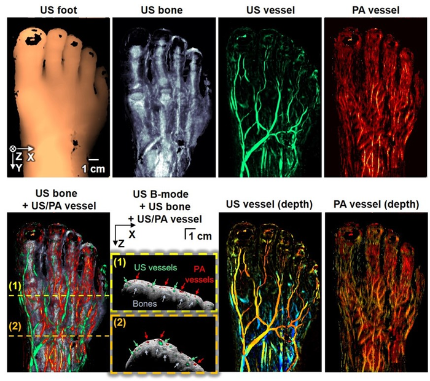
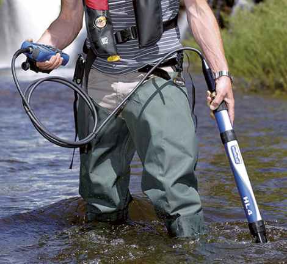
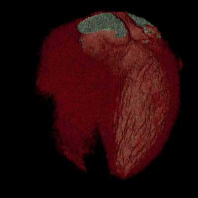
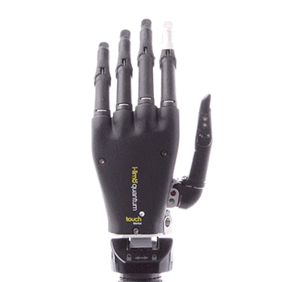
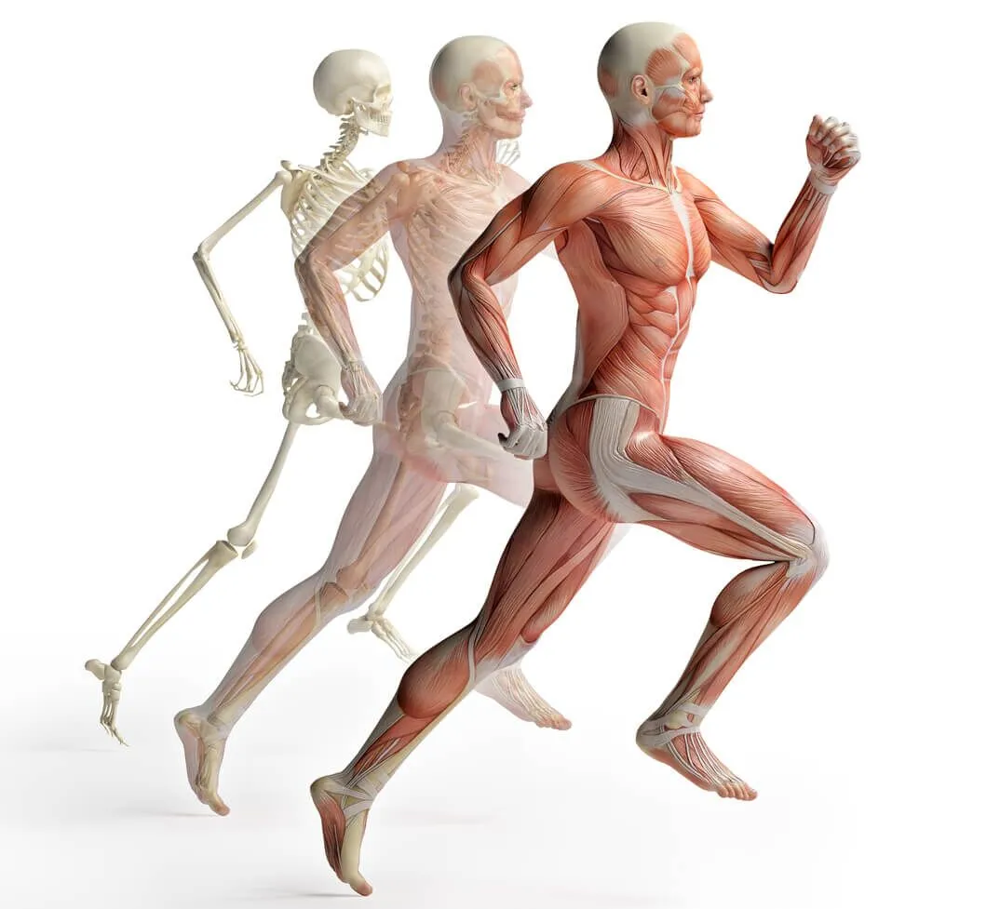
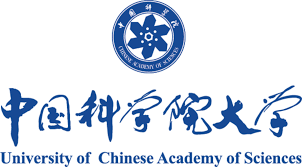

Experience

Research Assistant
University at Buffalo – Buffalo, NY
Sep 2021 – Present
- PhD research on photoacoustic imaging and AI-assisted diagnostics.
- Published in IEEE TUFFC, Optica, BOE; led NIH-funded projects.

Co-founder & Core Engineer
High-Precision Sensor Company – Beijing / Buffalo
2015 – Present (Part-time)
- Designed high-precision sensors for weather and medical applications.
- Built firmware (C, Python, GPT), expanded business to 5+ countries.

Teaching Assistant – BME 503: Image Processing
University at Buffalo
Spring 2023
- Assisted in graduate-level image segmentation, filtering, and coding labs.

Teaching Assistant – BME 302: Medical Devices
University at Buffalo
Fall 2022
- Supervised prototyping projects and biomedical sensor lab sessions.

Research Assistant
Cornell University – Ithaca, NY
Sep 2020 – Jun 2021
- Developed musculoskeletal protocols using multiphoton microscopy.
- Analyzed Ca2+ signals from osteocytes under mechanical stress.

Research & Development Engineer
Chinese Academy of Sciences – Beijing
May 2018 – Sep 2020
- Led development of rocket signal communication systems.
- Wrote embedded software for real-time telemetry.

Undergraduate Research Assistant
University of Kentucky – Lexington, KY
Jan 2018 – Jan 2019
- Developed GUIs and image-processing pipelines using C# and LabView.
- Enhanced neonatal device interfaces for clinical reliability.